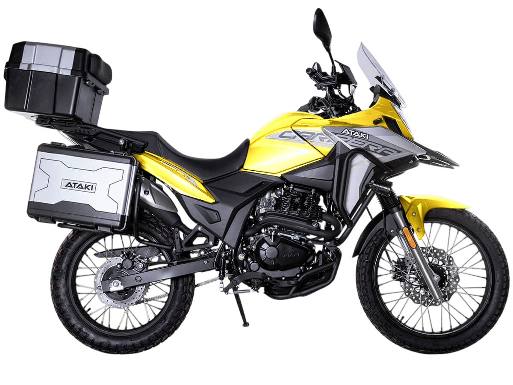

₽20000
Мотоцикл ATAKI Carrera 300 – турэндуро, готовый к покорению любых маршрутов. Идеально подходит для поездок, когда не знаешь, чего ожидать от дороги. Уже в базовой комплектации имеются: • Багажные кофры; • Защитные дуги; • Дополнительный свет; • USB-разъём для подключения и зарядки. Одноцилиндровый 4-тактный двигатель ZONGSHEN PR300/ZS175FMM-5 имеет объём 271 см³ и выдаёт мощность в 24 л.с. Для поддержания оптимальной температуры двигателя используется воздушное охлаждение. За подачу топлива отвечает карбюратор PZ30. Он обеспечивает бесперебойную работу в самых жёстких условиях, прост в обслуживании и неприхотлив к качеству топлива. Коробка передач с 6 ступенями имеет классическую схему 1-N-2-3-4-5-6. Объём топливного бака 16 литров. Запуск двигателя осуществляется с помощью электростартера. На мотоцикл установлены спицованные колёса диаметром 19 дюймов спереди и 17 дюймов сзади. Передняя подвеска представлена телескопической вилкой с ходом 131 мм, а сзади используется моноамортизатор с ходом 39 мм. В паре они позволяют эффективно амортизировать удары и поглощать избыточные вибрации при езде по бездорожью. За торможение отвечает дисковая гидравлическая система. Габариты 2065x915x1165 мм. Колёсная база 1300 мм. Высота по седлу 820 мм. Вес 165 кг. Мотоцикл имеет ПТС и все необходимое для езды по дорогам общего пользования. Для освещения используется яркая LED-оптика. На дугах установлен дополнительный свет, повышающий площадь освещения дороги и улучшающий видимость. Комплектация и внешний вид мотоцикла могут отличаться в зависимости от поставки. Изображение на сайте не гарантирует наличие тех или иных опций. Уточняйте информацию при оформлении заказа.